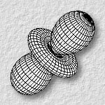

 The Plenoptic Illumination Function
, , , and
IEEE Transactions on Multimedia, Vol. 4, No. 3, September 2002, pp. 361-371.
(This paper received the IEEE Transactions on Multimedia Prize Paper Award 2005.)Abstract
- Image-based modeling and rendering has been demonstrated as a cost-effective and efficient approach to virtual reality applications. The computational model that most image-based techniques are based on is the plenoptic function. Since the original formulation of the plenoptic function does not include illumination, most previous image-based virtual reality applications simply assume that the illumination is fixed. In this paper, we propose a new formulation of the plenoptic function, called the plenoptic illumination function, which explicitly specifies the illumination component. Techniques based on this new formulation can be extended to support relighting as well as view interpolation. To relight images with various illumination configurations, we propose a local illumination model, which utilizes the rules of image superposition. We demonstrate how this new formulation can be applied to extend two existing image-based representations, panorama representation such as QuickTime VR and two-plane parameterization (light field and lumigraph), to support relighting with trivial modifications. The core of this framework is compression, and we therefore show how to exploit two types of data correlation, the intra-pixel and the inter-pixel correlations, in order to achieve a manageable storage size.
Interactive Demo
Click here for downloading and installing the demo program.Download Paper
- Acrobat: plenill2.pdf (size: 8.4MB)
Related Publications